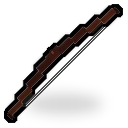

Cotton Fabric
Cotton Fabric is an uncommon material. Soft cotton cloth. Used for mage clothes and bowstrings.
Item sources
| Source | Quantity | Rarity | Notes |
|---|---|---|---|
| Cave Spider | 1–2 | 1/11 | |
| Sand Veil Cultist | 1–2 | 1/11 | |
| Mummy | 1–2 | 1/17 | |
| Cultist | 1 | 1/20 | |
| Bernie | 1–3 | 1/30 | |
| Bandit Elite | 1 | 1/40 | |
| Bandit King | 2–4 | 1/160 | Rare Drop table |
| Bernie | 2–4 | 1/160 | Rare Drop table |
| Cult Leader | 2–4 | 1/160 | Rare Drop table |
| Cyclops | 2–4 | 1/160 | Rare Drop table |
| Punchy | 2–4 | 1/160 | Rare Drop table |
| Shooty | 2–4 | 1/160 | Rare Drop table |
| Garbage Man | 2–4 | 1/480 | Rare Drop table |
| Slime King | 2–4 | 1/480 | Rare Drop table |
| Bandit Elite | 2–4 | 1/640 | Rare Drop table |
| Super Zombie | 2–4 | 1/640 | Rare Drop table |
| Bandit | 2–4 | 1/1,280 | Rare Drop table |
| Cultist | 2–4 | 1/1,280 | Rare Drop table |
| Oak Entling | 2–4 | 1/1,280 | Rare Drop table |
| Slime | 2–4 | 1/1,280 | Rare Drop table |
| Squirrel | 2–4 | 1/1,280 | Rare Drop table |
| Zombie | 2–4 | 1/1,280 | Rare Drop table |
| Tier 2 Endless chest | 6–10 | 10% of its rows | Chest |
| Bandit Camp chests | 2–4 | 40% of its extra row | Endless Dungeon |
Made by
Level 10; makes 1:
 Cotton ×25
Cotton ×25
Quest rewards
Uses
| Makes | Takes | Level | Notes |
|---|---|---|---|
 Maple Bow Maple Bow | 1 | 10 | |
 Cotton Hat Cotton Hat | 2 | 10 | |
 Cotton Robe Cotton Robe | 4 | 10 | |
 Nettle Fabric Nettle Fabric | 12 | 30 | Master Refinery |
 Ipe Bow | 1 | 30 | |
 Camp Chart ×2 Camp Chart ×2 | 6 | 25 | Cartographer's Table |
Repair Station
The Repair Station mends these with it:
Notes
Not written yet
When Cotton Fabric is worth getting, and what to do with it.
Gallery
Not written yet
No pictures yet: renders, models and animations go here.
Trivia
Not written yet
Anything else worth knowing.
Changes
Not written yet
What changed for Cotton Fabric, update by update.